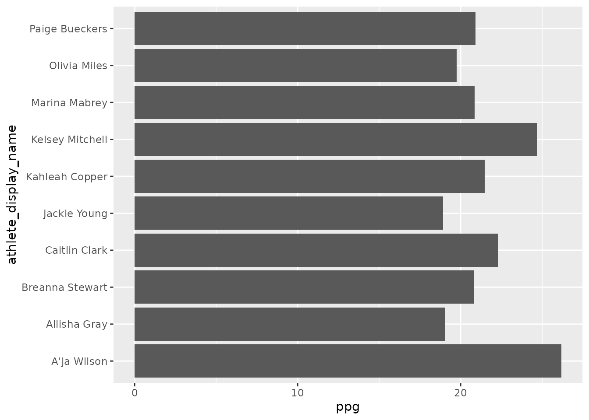
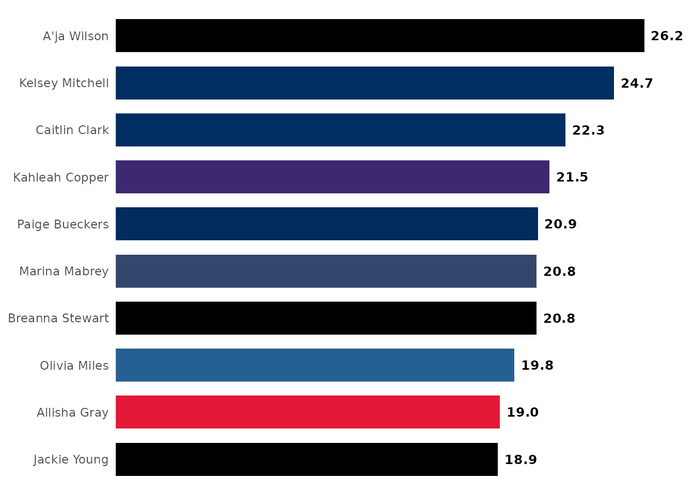
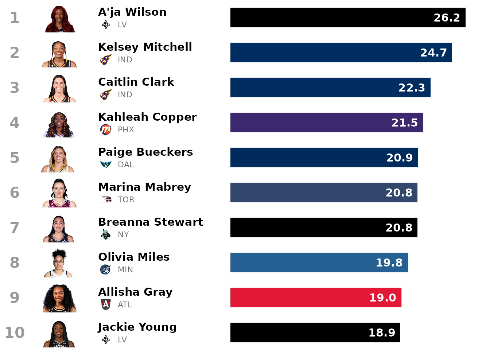
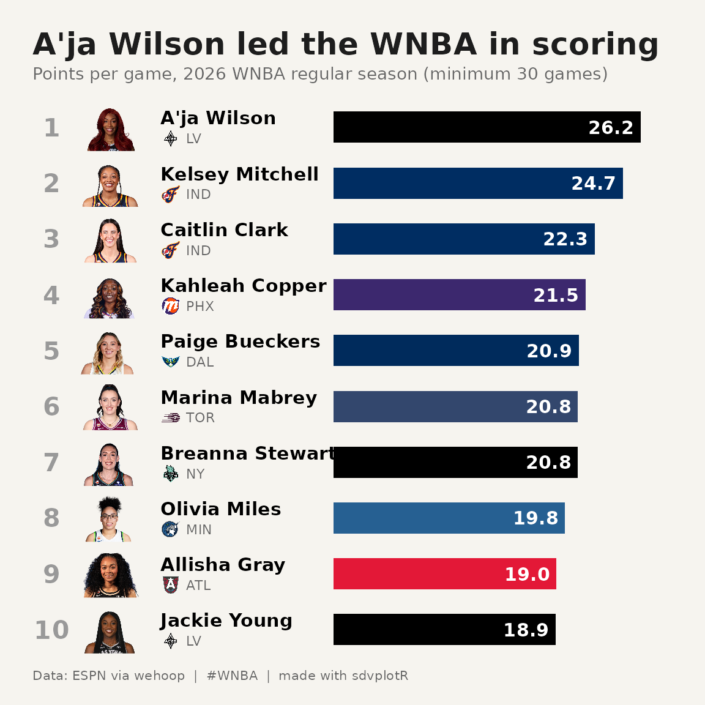
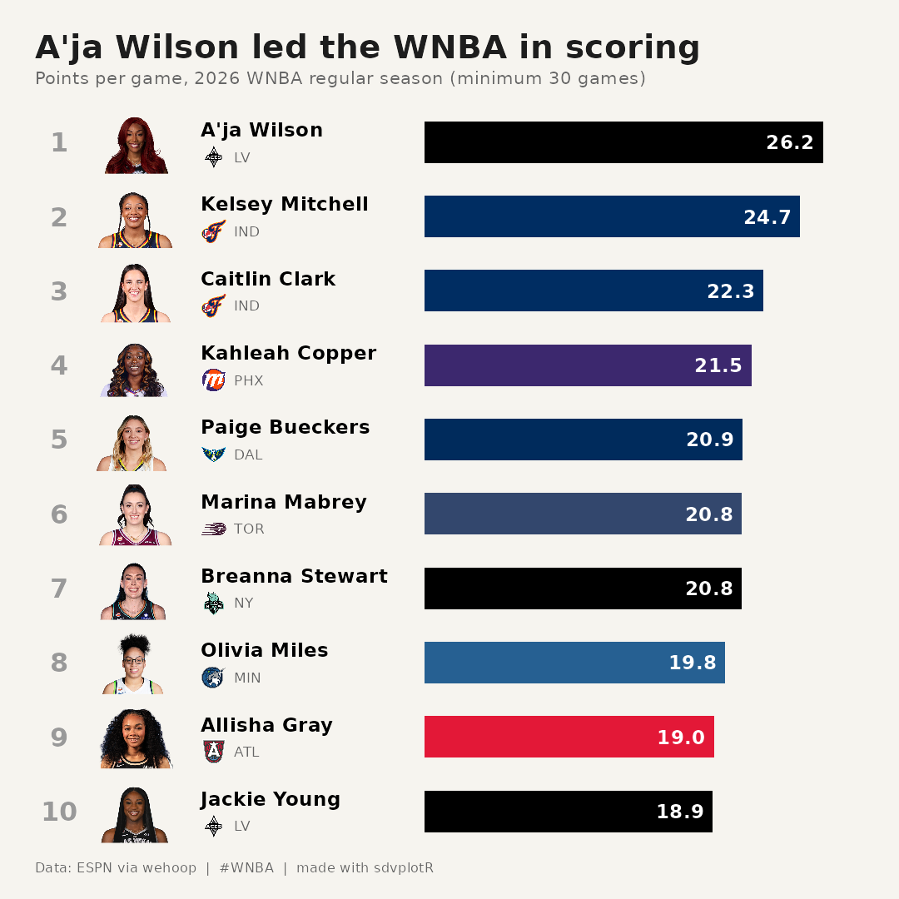
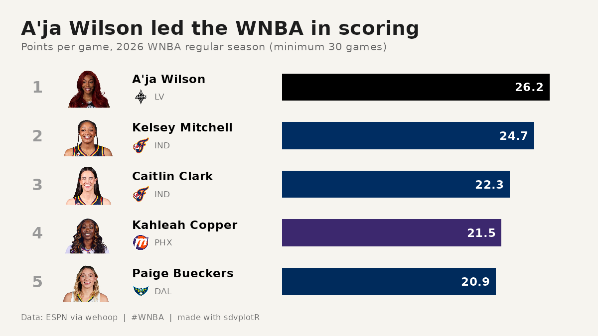

WNBA Scoring Leaders Card
Source:vignettes/recipe-wnba-scoring-leaders-card.Rmd
recipe-wnba-scoring-leaders-card.RmdOn this page
The brief: the regular season just ended, and the
social team wants a scoring-leaders card: the top ten in points per game
with each player’s face and team, as a 1080 x 1080 image for Instagram,
plus a top-five cut at 1200 x 675 for X and Bluesky. The box scores are
ESPN’s through wehoop; the headshots come from ESPN’s CDN through
geom_sdv_headshots().
library(sdvplotR)
library(ggplot2)
library(dplyr, warn.conflicts = FALSE)
season <- 2026
out_dir <- tempfile("sdvplotR-recipe-") # where the exports go; use your own folder
dir.create(out_dir)1. Get the data
One row per player per game. ESPN files the All-Star Game and the
Commissioner’s Cup final as regular-season games, but neither counts in
the official stats; the schedule marks the standard games with
type_abbreviation "STD", so a semi join keeps
only those. Players who did not play are dropped, the qualifier is 30
games (about 70% of the 44-game schedule), and a player traded
mid-season is listed with her last team.
regular <- wehoop::load_wnba_schedule(season) |> filter(season_type == 2)
count(regular, type_abbreviation) # STD, plus the All-Star Game and the Cup final
#> # A tibble: 3 × 2
#> type_abbreviation n
#> <chr> <int>
#> 1 ALLSTAR 1
#> 2 CC 1
#> 3 STD 331
standard <- regular |>
filter(type_abbreviation == "STD") |>
select(game_id)
box <- wehoop::load_wnba_player_box(season)
stopifnot(identical(class(box$game_id), class(standard$game_id))) # one type on both sides of the key
leaders <- box |>
semi_join(standard, by = "game_id") |>
filter(!did_not_play) |>
group_by(athlete_id, athlete_display_name) |>
summarise(
games = n(),
ppg = mean(points),
team = last(team_abbreviation, order_by = game_date),
.groups = "drop"
) |>
filter(games >= 30) |>
arrange(desc(ppg), athlete_display_name) |> # the name breaks a tie the same way every run
slice_head(n = 10) |>
mutate(rank = row_number())
leaders
#> # A tibble: 10 × 6
#> athlete_id athlete_display_name games ppg team rank
#> <int> <chr> <int> <dbl> <chr> <int>
#> 1 3149391 A'ja Wilson 41 26.2 LV 1
#> 2 3142191 Kelsey Mitchell 44 24.7 IND 2
#> 3 4433403 Caitlin Clark 40 22.3 IND 3
#> 4 2998938 Kahleah Copper 40 21.5 PHX 4
#> 5 4433730 Paige Bueckers 42 20.9 DAL 5
#> 6 3904576 Marina Mabrey 32 20.8 TOR 6
#> 7 2998928 Breanna Stewart 42 20.8 NY 7
#> 8 4433791 Olivia Miles 40 19.8 MIN 8
#> 9 3058901 Allisha Gray 44 19.0 ATL 9
#> 10 4065870 Jackie Young 43 18.9 LV 102. The first draft
A horizontal bar chart is the right shape for a ranked list of names.

The leader is buried (ggplot2 sorts a text axis alphabetically, bottom up), every bar is the same grey, the exact values are missing, and nothing says what or when.
3. Order, team colors and values
reorder() sorts the names by scoring, so No. 1 is on
top. Each bar takes its team’s color from
sdv_team_colors(), with one catch: a few primaries (the
Aces’ silver, the Liberty’s seafoam) are too light to carry white text
or to stand out on a light card, so a small WCAG luminance check swaps
those to the team’s secondary color. The values go at the end of each
bar, which makes the x axis unnecessary.
luminance <- function(hex) {
rgb <- grDevices::col2rgb(hex) / 255
rgb <- ifelse(rgb <= 0.03928, rgb / 12.92, ((rgb + 0.055) / 1.055)^2.4)
drop(c(0.2126, 0.7152, 0.0722) %*% rgb) # WCAG relative luminance, 0 (black) to 1 (white)
}
primary <- sdv_team_colors("wnba", leaders$team)
secondary <- sdv_team_colors("wnba", leaders$team, type = "secondary")
leaders <- leaders |>
mutate(color = unname(if_else(luminance(primary) < 0.3, primary, secondary)))
ggplot(leaders, aes(ppg, reorder(athlete_display_name, ppg))) +
geom_col(aes(fill = color), width = 0.7) +
geom_text(aes(label = sprintf("%.1f", ppg)), hjust = -0.2, fontface = "bold", size = 3.4) +
scale_fill_identity() +
scale_x_continuous(expand = expansion(mult = c(0, 0.08))) +
labs(x = NULL, y = NULL) +
theme_minimal() +
theme(axis.text.x = element_blank(), panel.grid = element_blank())
4. Faces and logos
A card like this sells on faces. Moving to a blank canvas (an x axis
fixed at 0 to 100, one unit per row on a reversed y axis) makes room for
a column of headshots and a small team logo under each name.
geom_sdv_headshots() takes ESPN athlete ids as they come,
and both image geoms size their images with height, a share
of the panel’s height, so with ten rows a headshot of 0.085 fills most
of a row.
rows <- function(data, bar_from = 47, bar_to = 95) {
n <- nrow(data)
scale <- (bar_to - bar_from) / max(data$ppg)
ggplot(data, aes(y = rank)) +
geom_text(aes(x = 3, label = rank), size = 5.5, fontface = "bold", color = "grey60") +
geom_sdv_headshots(aes(x = 12, player_id = athlete_id), sport = "wnba", height = 0.85 / n) +
geom_text(aes(x = 20, y = rank - 0.17, label = athlete_display_name), hjust = 0, size = 4, fontface = "bold") +
geom_sdv_logos(aes(x = 21.6, y = rank + 0.2, team = team), sport = "wnba", height = 0.36 / n) +
geom_text(aes(x = 24, y = rank + 0.2, label = team), hjust = 0, size = 3, color = "grey40") +
geom_rect(
aes(xmin = bar_from, xmax = bar_from + ppg * scale, ymin = rank - 0.28, ymax = rank + 0.28, fill = color)
) +
geom_text(
aes(x = bar_from + ppg * scale - 1, label = sprintf("%.1f", ppg)),
hjust = 1, size = 4, fontface = "bold", color = "white"
) +
scale_fill_identity() +
scale_y_reverse() +
coord_cartesian(xlim = c(0, 100), ylim = c(0.5, n + 0.5), expand = FALSE) +
theme_void()
}
rows(leaders)
5. Make it a card
The finishing pass is the frame: a warm off-white background, the headline as the title (the stat goes in the subtitle), the qualifier stated, and a footer with the source. The frame is a theme on top of the rows, so the same function draws the square post and a wider one.
bg <- "#f6f4ef"
leader <- leaders[1, ]
card <- function(data) {
rows(data) +
labs(
title = paste(leader$athlete_display_name, "led the WNBA in scoring"),
subtitle = paste0("Points per game, ", season, " WNBA regular season (minimum 30 games)"),
caption = "Data: ESPN via wehoop | #WNBA | made with sdvplotR"
) +
theme(
plot.background = element_rect(fill = bg, color = NA),
plot.title = element_text(face = "bold", size = 19, color = "#1d1d1d", margin = margin(b = 4)),
plot.subtitle = element_text(size = 10.5, color = "grey40", margin = margin(b = 10)),
plot.caption = element_text(size = 8, color = "grey40", hjust = 0, margin = margin(t = 8)),
plot.margin = margin(20, 20, 14, 20)
)
}
card(leaders)
6. Export for Instagram and X
The square holds all ten. The 16:9 post for X and Bluesky is too
short for ten readable rows, so it gets the top five from the same
function: changing the content to fit the format beats shrinking the
type. Inches times dpi gives the exact pixels, and
bg matches the card so no white edge shows.
square <- file.path(out_dir, "wnba_scoring_1080x1080.png")
wide <- file.path(out_dir, "wnba_scoring_top5_1200x675.png")
ggsave(square, card(leaders), width = 7.2, height = 7.2, dpi = 150, bg = bg)
ggsave(wide, card(head(leaders, 5)), width = 8, height = 4.5, dpi = 150, bg = bg)
magick::image_info(magick::image_read(c(square, wide)))[c("width", "height")]
#> # A tibble: 2 × 2
#> width height
#> <int> <int>
#> 1 1080 1080
#> 2 1200 675
magick::image_read(square)
The top-five cut for X and Bluesky:
magick::image_read(wide)